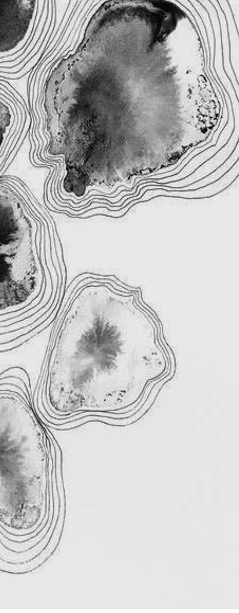

壹
五十六家诗谱
五十六位书写者，按作品数排定座次。每一横列是一位诗人，色段即五脉——条长者兼跨数脉，格小者一生只留一首。榜单尽头的印谱方阵，是侠义书写的长尾。
语料 · 以《全唐诗》系统收录的咏侠/侠义题材作品为样本，共 90 首主记录。另有 10 条异文重复收录已在审计中标记（duplicate），本页统计只计主记录。

纵死侠骨香不惭世上英
李白《侠客行》句
侠骨是对世道的硬，柔情是对人的软。五脉之中抒怀最盛，三十二篇——侠先有情，后有剑。
侠韵流殇
古城莽苍饶荆榛驱马荒城愁杀人
高适《古大梁行》句
韵在纸上流传，殇在水中沉失。九十首之外，还有多少侠句连名字都没能留下——流传与散佚，各是这卷书的一半。
贰
数据与方法
语 料
《全唐诗》系统所收咏侠、侠义题材作品，主记录 90 首，出自 56 位诗人。
去 重
异文重复收录 10 条，已在审计中标记；全站统计只计主记录，不重复计数。
系 年
30 首为作品级系年，40 首依作者行年推定，20 首待考——不虚构年份。
归 类
五脉主题按题材语义聚类归并；一诗一脉，取其主要气息，边界篇目人工复核。
侠客重恩光，骢马饰金装。
瞥闻传羽檄，驰突救边荒。
张易之这首《出塞》仍没有年份。
九十首里，三十首归于其年，四十首由生平推定，二十首散作星辰。
凡时间未能收留的，想象都收留了——
它们都归在"侠"的共同想象里。
侠
收 卷 · 回 到 卷 首